물류관리사-2교시 (2022-08-06 기출문제)
1과목: 보관하역론
1. 보관의 원칙에 관한 설명으로 옳지 않은 것은?
- 선입선출의 원칙: 먼저 입고하여 보관한 물품을 먼저 출고하는 원칙이다.
- 회전대응의 원칙: 입출고 빈도에 따라 보관 위치를 달리하는 원칙으로 입출고 도가 높은 화물은 출입구 가까운 장소에 보관한다.
- 유사성의 원칙: 연대출고가 예상되는 관련 품목을 출하가 용이하도록 모아서 보관하는 원칙이다.
- 위치표시의 원칙: 보관된 물품의 장소와 선반번호의 위치를 표시하여 입출고 작업의 효율성을 높이는 원칙이다.
- 중량특성의 원칙: 중량에 따라 보관 장소의 높이를 결정하는 원칙으로 중량이 거운 물품은 하층부에 보관한다.
(정답률: 알수없음)

2. 보관의 기능에 해당하는 것을 모두 고른 것은?
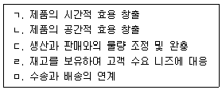
- ㄱ, ㄴ, ㄹ
- ㄴ, ㄷ, ㅁ
- ㄱ, ㄴ, ㄷ, ㄹ
- ㄱ, ㄷ, ㄹ, ㅁ
- ㄴ, ㄷ, ㄹ, ㅁ
(정답률: 알수없음)
3. 물류센터의 종류에 관한 설명으로 옳지 않은 것은?
- 항만 입지형은 부두 창고, 임항 창고, 보세 창고 등이 있다.
- 단지 입지형은 유통업무 단지 등의 유통 거점에 집중적으로 입지를 정하고 있는 류센터 및 창고로 공동창고, 집배송 단지 및 복합 물류터미널 등이 있다.
- 임대 시설은 화차로 출하하기 위하여 일시 대기하는 화물의 보관을 위한 물류센터이다.
- 자가 시설은 제조 및 유통 업체가 자기 책임 하에 운영하는 물류센터이다.
- 도시 근교 입지형은 백화점, 슈퍼마켓, 대형 할인 매장 및 인터넷 쇼핑몰 등을 원하는 창고이다.
(정답률: 알수없음)
4. ICD(Inland Container Depot)에 관한 설명으로 옳은 것을 모두 고른 것은?
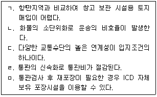
- ㄱ, ㄴ, ㄷ
- ㄱ, ㄷ, ㄹ
- ㄴ, ㄷ, ㄹ
- ㄴ, ㄹ, ㅁ
- ㄷ, ㄹ, ㅁ
(정답률: 알수없음)
5. 복합 물류터미널에 관한 설명으로 옳지 않은 것은?
- 화물의 혼재기능을 수행한다.
- 환적기능을 구비하여 터미널 기능을 실현한다.
- 장기보관 위주의 보관 기능을 강화한 시설이다.
- 수요단위에 적합하게 재포장하는 기능을 수행한다.
- 화물 정보센터의 기능을 강화하여 화물 운송 및 재고 정보 등을 제공한다.
(정답률: 알수없음)
6. 시장 및 생산공장의 위치와 수요량이 아래 표와 같다. 무게중심법에 따라 출된 유통센터의 입지 좌표(X, Y)는?
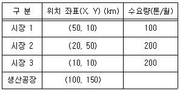
- X: 35, Y: 55
- X: 35, Y: 61
- X: 61, Y: 88
- X: 75, Y: 85
- X: 75, Y: 88
(정답률: 알수없음)
7. 물류센터의 설계 시 고려사항에 관한 설명으로 옳지 않은 것은?
- 물류센터의 규모 산정 시 목표 재고량은 고려하나 서비스 수준은 고려 대상이 아니다.
- 제품의 크기, 무게, 가격 등을 고려한다.
- 입고방법, 보관방법, 피킹방법, 배송방법 등 운영특성을 고려한다.
- 설비종류, 운영방안, 자동화 수준 등을 고려한다.
- 물류센터 입지의 결정 시 관련 비용의 최소화를 고려한다.
(정답률: 알수없음)
8. 물류센터의 일반적인 입지선정에 관한 설명으로 옳지 않은 것은?
- 수요와 공급을 효율적으로 연계할 수 있는 지역을 선정한다.
- 노동력 확보가 가능한 지역을 선정한다.
- 경제적, 자연적, 지리적 요인 등을 고려해야 한다.
- 운송수단의 연계가 용이한 지역에 입지한다.
- 토지 가격이 저렴한 지역을 최우선 선정조건으로 고려한다.
(정답률: 알수없음)
9. 물류센터 투자 타당성을 분석할 때 편익의 현재가치 합계와 비용의 현재가치 합계가 동일하게 되는 수준의 할인율을 활용하는 기법은?
- 순현재가치법
- 내부수익율법
- 브라운깁슨법
- 손익분기점법
- 자본회수기간법
(정답률: 알수없음)
10. 보관 설비에 관한 설명으로 옳지 않은 것은?
- 캔틸레버 랙(Cantilever Rack): 긴 철재나 목재의 보관에 효율적인 랙이다.
- 드라이브 인 랙(Drive in Rack): 지게차가 한쪽 방향에서 2개 이상의 깊이로 된 랙으로 들어가 화물을 보관 및 반출할 수 있다.
- 파렛트 랙(Pallet Rack): 파렛트 화물을 한쪽 방향에서 넣으면 중력에 의해 미끄러져 인출할 때는 반대방향에서 화물을 반출할 수 있다.
- 적층 랙(Mezzanine Rack): 천장이 높은 창고에서 저장 공간을 복층구조로 설치하여 공간 활용도가 높다.
- 캐러셀(Carousel): 랙 자체를 회전시켜 저장 및 반출하는 장치이다.
(정답률: 알수없음)
11. 물류센터의 작업 계획 수립 시 세부 고려사항으로 옳지 않은 것은?
- 출하 차량 동선 - 평치, 선반 및 특수 시설의 사용 여부
- 화물 형태 - 화물의 포장 여부, 포장 방법 및 소요 설비
- 하역 방식 - 하역 자동화 수준, 하역 설비의 종류 및 규격
- 검수 방식 - 검수 기준, 검수 작업 방법 및 소요 설비
- 피킹 및 분류 - 피킹 기준, 피킹 방법 및 소팅 설비
(정답률: 알수없음)
12. 물류센터 건설의 업무 절차를 물류거점 분석, 물류센터 설계 그리고 시공 및 운영 등 단계별로 시행하려고 한다. 물류거점 분석 단계에서 수행하는 활동이 아닌 것은?
- 지역 분석
- 하역장비 설치
- 수익성 분석
- 투자 효과 분석
- 거시환경 분석
(정답률: 알수없음)
13. 3개의 제품(A~C)을 취급하는 1개의 창고에서 기간별 사용공간이 다음 표와 같다. (ㄱ)임의위치저장(Randomized Storage)방식과 (ㄴ)지정위치저장(Dedicated Storage)방식으로 각각 산정된 창고의 저장소요공간(m2)은?
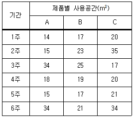
- ㄱ: 51, ㄴ: 51
- ㄱ: 51, ㄴ: 67
- ㄱ: 67, ㄴ: 89
- ㄱ: 89, ㄴ: 94
- ㄱ: 94, ㄴ: 89
(정답률: 알수없음)
14. 오더피킹의 출고형태 중 파렛트 단위로 보관하다가 파렛트 단위로 출고되는 제1형태(P→P)의 적재방식에 활용되는 장비가 아닌 것은?
- 트랜스 로보 시스템(Trans Robo System)
- 암 랙(Arm Rack)
- 파렛트 랙(Pallet Rack)
- 드라이브 인 랙(Drive in Rack)
- 고층 랙(High Rack)
(정답률: 알수없음)
15. 창고에 관한 설명으로 옳은 것은?
- 보세창고는 지방자치단체장의 허가를 받은 경우에는 통관되지 않은 내국물품도 장치할 수 있다.
- 영업창고는 임대료를 획득하기 위해 건립되므로 자가창고에 비해 화주 입장의 창고설계 최적화가 가능하다.
- 자가창고는 영업창고에 비해 창고 확보와 운영에 소요되는 비용 및 인력문제와 화물량 변동에 탄력적으로 대응할 수 있다.
- 임대창고는 특정 보관시설을 임대하거나 리스(Lease)하여 물품을 보관하는 창고형태이다.
- 공공창고는 특정 보관시설을 임대하여 물품을 보관하는 창고형태로 민간이 설치 및 운영한다.
(정답률: 알수없음)
16. 다음이 설명하는 창고의 기능은?
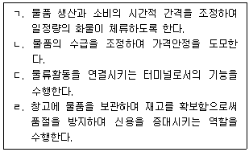
- ㄱ: 가격조정기능, ㄴ: 수급조정기능, ㄷ: 연결기능, ㄹ: 매매기관적 기능
- ㄱ: 수급조정기능, ㄴ: 가격조정기능, ㄷ: 매매기관적 기능, ㄹ: 신용기관적 기능
- ㄱ: 연결기능, ㄴ: 가격조정기능, ㄷ: 수급조정기능, ㄹ: 판매전진기지적 기능
- ㄱ: 수급조정기능, ㄴ: 가격조정기능, ㄷ: 연결기능, ㄹ: 신용기관적 기능
- ㄱ: 연결기능, ㄴ: 판매전진기지적 기능, ㄷ: 가격조정기능, ㄹ: 수급조정기능
(정답률: 알수없음)
17. 경제적 주문량(EOQ) 모형에 관한 설명으로 옳은 것은?
- 주문량이 커질수록 할인율이 높아지기 때문에 가능한 많은 주문량을 설정하는 것이 유리하다.
- 조달기간이 일정하며, 주문량은 전량 일시에 입고된다.
- 재고유지비용은 평균재고량에 반비례한다.
- 재고부족에 대응하기 위한 안전재고가 필요하다.
- 수요가 불확실하기 때문에 주문량과 주문간격이 달라진다.
(정답률: 알수없음)
18. 분산구매방식과 비교한 집중구매방식(Centralized Purchasing Method)에 관한 설명으로 옳은 것은?
- 일반적으로 대량 구매가 이루어지기 때문에 수요량이 많은 품목에 적합하다.
- 사업장별 다양한 요구를 반영하여 구매하기에 용이하다.
- 사업장별 독립적 구매에 유리하나 수량할인이 있는 품목에는 불리하다.
- 전사적으로 집중구매하기 때문에 가격 및 거래조건이 불리하다.
- 구매절차의 표준화가 가능하여 긴급조달이 필요한 자재의 구매에 유리하다.
(정답률: 알수없음)
19. A상품의 2022년도 6월의 실제 판매량과 예측 판매량, 7월의 실제 판매량 자료가 아래 표와 같을 때 지수평활법을 활용한 8월의 예측 판매량(개)은? (단, 평활상수(α)는 0.4를 적용한다.)
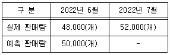
- 48,320
- 49,200
- 50,320
- 50,720
- 50,880
(정답률: 알수없음)
20. 제품 B를 취급하는 K물류센터는 경제적 주문량(EOQ)에 따라 재고를 관리하고 있다. 재고관리에 관한 자료가 아래와 같을 때 (ㄱ)연간 총 재고비용과 (ㄴ)연간 발주횟수는 각각 얼마인가? (단, 총 재고비용은 재고유지비용과 주문비용만을 고려한다.)
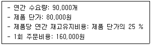
- ㄱ: 12,000,000원, ㄴ: 75회
- ㄱ: 12,000,000원, ㄴ: 90회
- ㄱ: 18,000,000원, ㄴ: 75회
- ㄱ: 18,000,000원, ㄴ: 90회
- ㄱ: 24,000,000원, ㄴ: 75회
(정답률: 알수없음)
21. 수요예측방법에 관한 설명으로 옳지 않은 것은?
- 정성적 수요예측방법에는 경영자판단법, 판매원이용법 등이 있다.
- 정량적 수요예측방법에는 이동평균법, 지수평활법 등이 있다.
- 델파이법(Delphi Method)은 원인과 결과관계를 가지는 두 요소의 과거 변화량에 대한 인과관계를 분석한 방법으로 정량적 수요예측방법에 해당한다.
- 가중이동평균법은 예측 기간별 가중치를 부여한 예측방법으로 일반적으로 예측대상 기간에 가까울수록 더 큰 가중치를 주어 예측하는 방법이다.
- 라이프사이클(Life-cycle) 유추법은 상품의 수명주기 기간별 과거 매출 증감 폭을 기준으로 수요량을 유추하여 예측하는 방법이다.
(정답률: 알수없음)
22. C도매상의 제품판매정보가 아래와 같을 때 최적의 재주문점은? (단, 소수점 첫째자리에서 반올림한다.)
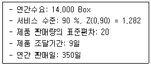
- 77
- 360
- 386
- 437
- 590
(정답률: 알수없음)
23. 재고에 관한 설명으로 옳지 않은 것은?
- 고객으로부터 발생하는 제품이나 서비스의 요구에 적절히 대응할 수 있게 한다.
- 안전재고는 재고를 품목별로 일정한 로트(Lot) 단위로 조달하기 때문에 발생한다.
- 공급사슬에서 발생하는 수요나 공급의 다양한 변동과 불확실성에 대한 완충역할을 수행한다.
- 재고를 필요이상으로 보유하게 되면 과도한 재고비용이 발생하게 된다.
- 재고관리는 제품, 반제품, 원재료, 상품 등의 재화를 합리적ㆍ경제적으로 유지하기 위한 활동이다.
(정답률: 알수없음)
24. JIT(Just In Time) 시스템에 관한 설명으로 옳지 않은 것은?
- 반복적인 생산에 적합하다.
- 효과적인 Pull 시스템을 구현할 수 있다.
- 공급업체의 안정적인 자재공급과 엄격한 품질관리가 이루어져야 효과성을 높일 수 있다.
- 제조준비시간 및 리드타임을 단축할 수 있다.
- 충분한 안전재고를 확보하여 품절에 대비하기 때문에 공급업체와 생산업체의 상호협력 없이도 시스템 운영이 가능하다.
(정답률: 알수없음)
25. 다음이 설명하는 하역합리화의 원칙은?
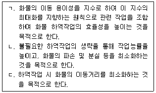
- ㄱ: 시스템화의 원칙, ㄴ: 하역 경제성의 원칙, ㄷ: 거리 최소화의 원칙
- ㄱ: 운반 활성화의 원칙, ㄴ: 화물 단위화의 원칙, ㄷ: 인터페이스의 원칙
- ㄱ: 화물 단위화의 원칙, ㄴ: 거리 최소화의 원칙, ㄷ: 하역 경제성의 원칙
- ㄱ: 운반 활성화의 원칙, ㄴ: 하역 경제성의 원칙, ㄷ: 거리 최소화의 원칙
- ㄱ: 하역 경제성의 원칙, ㄴ: 운반 활성화의 원칙, ㄷ: 거리 최소화의 원칙
(정답률: 알수없음)
26. 하역의 요소에 관한 내용이다. ( )에 들어갈 용어로 옳은 것은?
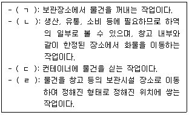
- ㄱ: 피킹, ㄴ: 운송, ㄷ: 디배닝, ㄹ: 적재
- ㄱ: 피킹, ㄴ: 운반, ㄷ: 배닝, ㄹ: 적재
- ㄱ: 적재, ㄴ: 운반, ㄷ: 디배닝, ㄹ: 분류
- ㄱ: 배닝, ㄴ: 운반, ㄷ: 피킹, ㄹ: 정돈
- ㄱ: 디배닝, ㄴ: 운송, ㄷ: 배닝, ㄹ: 분류
(정답률: 알수없음)
27. 하역합리화를 위한 활성화의 원칙에서 활성지수가 '3'인 화물의 상태는? (단, 활성지수는 0~4이다.)
- 대차에 실어 놓은 상태
- 파렛트 위에 놓인 상태
- 화물이 바닥에 놓인 상태
- 컨베이어 위에 놓인 상태
- 상자 안에 넣은 상태
(정답률: 알수없음)
28. 하역시스템에 관한 설명으로 옳지 않은 것은?
- 하역작업 장소에 따라 사내하역, 항만하역, 항공하역 등으로 구분할 수 있다.
- 제조업체의 사내하역은 조달, 생산 등의 과정에서 필요한 운반과 하역기능을 포함한 것이다.
- 하역시스템의 효율화를 통해 에너지 및 자원을 절약할 수 있다.
- 하역시스템의 도입 목적은 범용성과 융통성을 지양하는데 있다.
- 하역시스템의 기계화를 통해 열악한 노동환경을 개선할 수 있다.
(정답률: 알수없음)
29. 자동분류시스템의 소팅방식에 관한 설명으로 옳은 것은?
- 크로스벨트(Cross belt) 방식: 컨베이어 반송면의 아래 방향에서 벨트 등의 분기장치가 나오는 방식으로 하부면의 손상 및 충격에 취약한 화물에는 적합하지 않다.
- 팝업(Pop-up) 방식: 레일을 주행하는 연속된 캐리어 상의 소형벨트 컨베이어를 레일과 교차하는 방향으로 구동시켜 단위화물을 내보내는 방식이다.
- 틸팅(Tilting) 방식: 반송면에 튀어나온 기구를 넣어 단위화물을 함께 이동시키면서 압출하는 방식이다.
- 슬라이딩슈(Sliding-shoe) 방식: 여러 형상의 화물을 수직으로 나누어 강제적으로 분류하므로 충격에 취약한 정밀기기나 깨지기 쉬운 물건은 피해야 한다.
- 다이버터(Diverter) 방식: 외부에 설치된 안내판을 회전시켜 반송경로 상에 가이드벽을 만들어 단위화물을 가이드벽에 따라 이동시키므로 다양한 형상의 화물 분류가 가능하다.
(정답률: 알수없음)
30. 포크 리프트(지게차)에 관한 설명으로 옳은 것은?
- 스트래들(Straddle)형은 전방이 아닌 차체의 측면에 포크와 마스트가 장착된 지게차이다.
- 디젤엔진식은 유해 배기가스와 소음이 적어 실내작업에 적합한 환경친화형 장비이다.
- 워키(Walkie)형은 스프레더를 장착하고 항만 컨테이너 야드 등 주로 넓은 공간에서 사용된다.
- 3방향 작동형은 포크와 캐리지의 회전이 가능하므로 진행방향의 변경 없이 작업할 수 있다.
- 사이드 포크형은 차체전방에 아웃리거를 설치하고 그 사이에 포크를 위치시켜 안정성을 향상시킨 지게차이다.
(정답률: 알수없음)
31. 하역의 기계화가 필요한 화물에 해당하는 것은 몇 개인가?
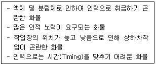
- 0개
- 1개
- 2개
- 3개
- 4개
(정답률: 알수없음)
32. 국가별 파렛트 표준규격의 연결이 옳은 것은?
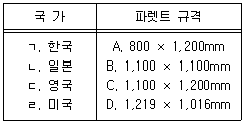
- ㄱ-B, ㄴ-A, ㄷ-C, ㄹ-D
- ㄱ-B, ㄴ-B, ㄷ-A, ㄹ-D
- ㄱ-B, ㄴ-C, ㄷ-C, ㄹ-A
- ㄱ-C, ㄴ-A, ㄷ-B, ㄹ-B
- ㄱ-C, ㄴ-B, ㄷ-D, ㄹ-A
(정답률: 알수없음)
33. 일관파렛트화(Palletization)의 경제적 효과가 아닌 것은?
- 포장의 간소화로 포장비 절감
- 작업 능률의 향상
- 화물 파손의 감소
- 운임 및 부대비용 절감
- 제품의 과잉생산 방지
(정답률: 알수없음)
34. 유닛로드 시스템(Unit Load System)의 선결과제에 해당하는 것을 모두 고른 것은?
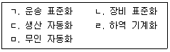
- ㄱ, ㄴ, ㄹ
- ㄱ, ㄴ, ㅁ
- ㄱ, ㄷ, ㅁ
- ㄴ, ㄷ, ㄹ
- ㄴ, ㄹ, ㅁ
(정답률: 알수없음)
35. 다음은 파렛트 풀 시스템 운영방식에 관한 내용이다. 다음 ( )에 들어갈 용어로 옳은 것은?
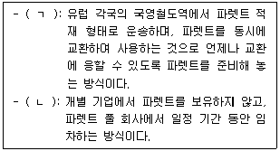
- ㄱ: 즉시교환방식, ㄴ: 리스ㆍ렌탈방식
- ㄱ: 대차결제교환방식, ㄴ: 즉시교환방식
- ㄱ: 리스ㆍ렌탈방식, ㄴ: 교환리스병용방식
- ㄱ: 교환리스병용방식, ㄴ: 대차결제교환방식
- ㄱ: 리스ㆍ렌탈방식, ㄴ: 즉시교환방식
(정답률: 알수없음)
36. 유닛로드 시스템(Unit Load System)에 관한 설명으로 옳지 않은 것은?
- 운송, 보관, 하역 등의 물류활동을 합리적으로 처리하기 위하여 포장화물의 기계취급에 적합하도록 단위화한 방식을 말한다.
- 화물을 파렛트나 컨테이너를 이용하여 벌크선박으로 운송한다.
- 화물취급단위에 대한 단순화와 표준화를 통하여 하역능력을 향상시키고, 물류비용을 절감할 수 있다.
- 하역을 기계화하고 운송ㆍ보관 등을 일관하여 합리화할 수 있다.
- 화물처리 과정에서 발생할 수 있는 파손이나 실수를 줄일 수 있다.
(정답률: 알수없음)
37. 항만하역기기 중 컨테이너 터미널에서 사용하는 하역기기가 아닌 것은?
- 리치 스태커(Reach Stacker)
- 야드 트랙터(Yard Tractor)
- 트랜스퍼 크레인(Transfer Crane)
- 탑 핸들러(Top Handler)
- 호퍼(Hopper)
(정답률: 알수없음)
38. 항만운송 사업 중 타인의 수요에 응하여 하는 행위로서 항만하역사업에 해당하는 것은?
- 선적화물(船積貨物)을 싣거나 내릴 때 그 화물의 개수를 계산하는 행위
- 선적화물 및 선박(부선을 포함한다)에 관련된 증명ㆍ조사ㆍ감정을 하는 행위
- 선적화물을 싣거나 내릴 때 그 화물의 인도ㆍ인수를 증명하는 행위
- 선박을 이용하여 운송된 화물을 화물주(貨物主) 또는 선박운항사업자의 위탁을 받아 항만에서 선박으로부터 인수하거나 화물주에게 인도하는 행위
- 선적화물을 싣거나 내릴 때 그 화물의 용적 또는 중량을 계산하거나 증명하는 행위
(정답률: 알수없음)
39. 주요 포장기법 중 금속의 부식을 방지하기 위한 포장 기술은?
- 방청 포장
- 방수 포장
- 방습 포장
- 진공 포장
- 완충 포장
(정답률: 알수없음)
40. 포장 결속 방법으로 옳지 않은 것은?
- 밴드결속 - 플라스틱, 나일론, 금속 등의 재질로 된 밴드를 사용한다.
- 꺽쇠 물림쇠 - 주로 칸막이 상자 등에서 상자가 고정되도록 사용하는 방법이다.
- 테이핑 - 용기의 견고성을 유지하기 위해 접착테이프를 사용한다.
- 대형 골판지 상자 - 작은 부품 등을 꾸러미로 묶지 않고 담을 때 사용한다.
- 슬리브 - 열수축성 플라스틱 필름을 화물에 씌우고 터널을 통과시킬 때 가열하여 필름을 수축시키는 방법이다.
(정답률: 알수없음)
2과목: 물류관련법규
41. 물류정책기본법상 물류계획에 관한 설명으로 옳지 않은 것은?
- 특별시장 및 광역시장은 지역물류정책의 기본방향을 설정하는 10년 단위의 지역물류기본계획을 5년마다 수립하여야 한다.
- 국가물류기본계획에는 국가물류정보화사업에 관한 사항이 포함되어야 한다.
- 국가물류기본계획은 「국토기본법」에 따라 수립된 국토종합계획 및 「국가통합교통체계효율화법」에 따라 수립된 국가기간교통망계획과 조화를 이루어야 한다.
- 지역물류기본계획은 국가물류기본계획에 배치되지 아니하여야 한다.
- 해양수산부장관은 국가물류기본계획을 수립한 때에는 이를 관보에 고시하여야 한다.
(정답률: 알수없음)
42. 물류정책기본법령상 국토교통부장관이 행정적ㆍ재정적 지원을 할 수 있는 환경친화적 물류활동을 위하여 하는 활동에 해당하는 것을 모두 고른 것은?
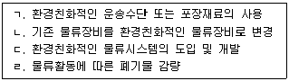
- ㄱ, ㄷ
- ㄱ, ㄹ
- ㄴ, ㄷ
- ㄴ, ㄷ, ㄹ
- ㄱ, ㄴ, ㄷ, ㄹ
(정답률: 알수없음)
43. 물류정책기본법령상 물류인력의 양성 및 물류관리사에 관한 설명으로 옳지 않은 것은?
- 「대한무역투자진흥공사법」에 따른 대한무역투자진흥공사는 물류연수기관이 될 수 없다.
- 물류관리사는 물류활동과 관련하여 전문지식이 필요한 사항에 대하여 계획ㆍ조사ㆍ연구ㆍ진단 및 평가 또는 이에 관한 상담ㆍ자문, 그 밖에 물류관리에 필요한 직무를 수행한다.
- 국토교통부장관은 물류관리사를 고용한 물류관련 사업자에 대하여 다른 사업자보다 우선하여 행정적ㆍ재정적 지원을 할 수 있다.
- 물류관리사는 다른 사람에게 자격증을 대여하여서는 아니된다.
- 물류관리사 자격의 취소를 하려면 청문을 하여야 한다.
(정답률: 알수없음)
44. 물류정책기본법령상 녹색물류협의기구에 관한 설명으로 옳지 않은 것은?
- 녹색물류협의기구는 환경친화적 물류활동 지원을 위한 사업의 심사 및 선정 업무를 수행한다.
- 국토교통부장관은 녹색물류협의기구가 환경친화적 물류활동 촉진을 위한 연구ㆍ개발 업무를 수행하는 데 필요한 행정적ㆍ재정적 지원을 할 수 있다.
- 녹색물류협의기구의 위원장은 위원 중에서 국토교통부장관이 지명하는 사람으로 한다.
- 녹색물류협의기구는 위원장을 포함한 15명 이상 30명 이하의 위원으로 구성한다.
- 국토교통부장관은 위원이 직무와 관련된 비위사실이 있는 경우에는 해당 위원을 해임 또는 해촉할 수 있다.
(정답률: 알수없음)
45. 물류정책기본법령상 국가물류정책위원회에 관한 설명으로 옳지 않은 것은?
- 국가물류정책위원회는 국가물류체계의 효율화에 관한 중요 정책 사항을 심의ㆍ조정한다.
- 국가물류정책위원회의 위원 중 공무원이 아닌 위원의 임기는 2년으로 하되, 연임할 수 있다.
- 국가물류정책위원회에는 5명 이내의 비상근 전문위원을 둘 수 있다.
- 국가물류정책위원회의 업무를 효율적으로 추진하기 위하여 물류정책분과위원회, 물류시설분과위원회, 국제물류분과위원회를 둘 수 있다.
- 물류시설분과위원회의 위원장은 해당 분과위원회의 위원 중에서 해양수산부장관이 지명하는 사람으로 한다.
(정답률: 알수없음)
46. 물류정책기본법령상 국제물류주선업에 관한 설명으로 옳은 것은?
- 컨테이너장치장을 소유하고 있는 자가 국제물류주선업을 등록하려는 경우 1억원 이상의 보증보험에 가입하여야 한다.
- 국제물류주선업을 경영하려는 자는 해양수산부장관에게 등록하여야 한다.
- 국제물류주선업자는 등록기준에 관한 사항을 5년이 경과할 때마다 신고하여야 한다.
- 국제물류주선업자가 그 사업을 양도한 때에는 그 양수인은 국제물류주선업의 등록에 따른 권리ㆍ의무를 승계한다.
- 해양수산부장관은 국제물류주선업자의 폐업 사실을 확인하기 위하여 필요한 경우에는 국세청장에게 폐업에 관한 과세정보의 제공을 요청할 수 있다.
(정답률: 알수없음)
47. 물류정책기본법령상 우수물류기업의 인증에 관한 설명으로 옳지 않은 것은?
- 국토교통부장관 및 해양수산부장관은 물류기업의 육성과 물류산업 발전을 위하여 소관 물류기업을 각각 우수물류기업으로 인증할 수 있다.
- 국제물류주선기업에 대한 우수물류기업 인증의 주체는 해양수산부장관이다.
- 인증우수물류기업은 우수물류기업의 인증이 취소된 경우에는 인증서를 반납하고, 인증마크의 사용을 중지하여야 한다.
- 국가 또는 지방자치단체는 인증우수물류기업이 해외시장을 개척하는 경우에는 해외시장 개척에 소요되는 비용을 우선적으로 지원할 수 있다.
- 국토교통부장관 및 해양수산부장관은 우수물류기업의 인증과 관련하여 우수물류기업 인증심사 대행기관을 공동으로 지정하여 인증신청의 접수 업무를 하게 할 수 있다.
(정답률: 알수없음)
48. 물류정책기본법령상 물류 공동화ㆍ자동화 촉진에 관한 설명으로 옳은 것을 모두 고른 것은?
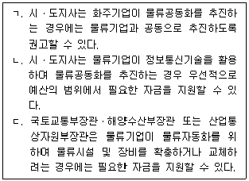
- ㄱ
- ㄷ
- ㄱ, ㄴ
- ㄴ, ㄷ
- ㄱ, ㄴ, ㄷ
(정답률: 알수없음)
49. 물류시설의 개발 및 운영에 관한 법률상 국가 또는 지방자치단체는 물류터미널사업자가 설치한 물류터미널의 원활한 운영에 필요한 기반시설의 설치 또는 개량에 필요한 예산을 지원할 수 있다. 이러한 기반시설에 해당하지 않는 것은?
- 「도로법」제2조제1호에 따른 도로
- 「철도산업발전기본법」제3조제1호에 따른 철도
- 「수도법」제3조제17호에 따른 수도시설
- 「국토의 계획 및 이용에 관한 법률 시행령」제2조제1항제6호에 따른 보건위생시설 중 종합의료시설
- 「물환경보전법」제2조제12호에 따른 수질오염방지시설
(정답률: 알수없음)
50. 물류시설의 개발 및 운영에 관한 법률상 물류터미널사업협회에 관한 설명이다. ( )에 들어갈 내용을 바르게 나열한 것은?
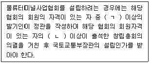
- ㄱ: 2분의 1, ㄴ: 3분의 1
- ㄱ: 3분의 1, ㄴ: 3분의 1
- ㄱ: 3분의 1, ㄴ: 2분의 1
- ㄱ: 5분의 1, ㄴ: 3분의 1
- ㄱ: 5분의 1, ㄴ: 4분의 1
(정답률: 알수없음)
51. 물류시설의 개발 및 운영에 관한 법령상 복합물류터미널사업에 관한 설명으로 옳은 것은?
- 복합물류터미널사업이란 두 종류 이상의 운송수단 간의 연계운송을 할 수 있는 규모 및 시설을 갖춘 물류터미널사업을 말한다.
- 「항만공사법」에 따른 항만공사는 복합물류터미널사업의 등록을 할 수 있는 자에 해당하지 않는다.
- 「물류시설의 개발 및 운영에 관한 법률」을 위반하여 벌금형을 선고받은 후 1년이 지난 자는 복합물류터미널사업의 등록을 할 수 있다.
- 부지 면적이 3만제곱미터인 경우는 복합물류터미널사업의 등록기준 중 부지 면적 기준을 충족한다.
- 복합물류터미널사업자가 그 등록한 사항 중 영업소의 명칭을 변경하려는 경우에는 변경등록을 하여야 한다.
(정답률: 알수없음)
52. 물류시설의 개발 및 운영에 관한 법률상 물류시설개발종합계획에 포함되어야 하는 사항으로 옳은 것을 모두 고른 것은?
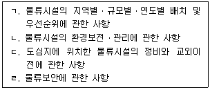
- ㄱ, ㄴ
- ㄷ, ㄹ
- ㄱ, ㄴ, ㄷ
- ㄴ, ㄷ, ㄹ
- ㄱ, ㄴ, ㄷ, ㄹ
(정답률: 알수없음)
53. 물류시설의 개발 및 운영에 관한 법률상 물류터미널사업에 관한 설명으로 옳지 않은 것은? (단, 물류터미널은 「국토의 계획 및 이용에 관한 법률」에 따른 도시ㆍ군계획시설에 해당하는 물류터미널에 한정한다)
- 물류터미널사업자는 물류터미널의 건설을 위하여 필요한 때에는 다른 사람의 토지에 출입하거나 이를 일시 사용할 수 있다.
- 물류터미널을 건설하기 위한 부지 안에 있는 국가 소유의 토지로서 물류터미널 건설사업에 필요한 토지는 해당 물류터미널 건설사업 목적이 아닌 다른 목적으로 매각하거나 양도할 수 없다.
- 복합물류터미널사업자는 복합물류터미널사업의 전부 또는 일부를 휴업하거나 폐업하려는 때에는 미리 국토교통부장관에게 신고하여야 한다.
- 일반물류터미널사업자는 건설하려는 물류터미널의 구조 및 설비 등에 관한 공사계획을 수립하여 국토교통부장관의 공사시행인가를 받아야 한다.
- 물류터미널을 건설하기 위한 부지 안에 있는 국가 또는 지방자치단체 소유의 재산은 「국유재산법」, 「공유재산 및 물품 관리법」, 그 밖의 다른 법령에도 불구하고 물류터미널사업자에게 수의계약으로 매각할 수 있다.
(정답률: 알수없음)
54. 물류시설의 개발 및 운영에 관한 법률상 물류시설개발종합계획에 관한 설명으로 옳지 않은 것은?
- 국토교통부장관은 물류시설개발종합계획을 5년 단위로 수립하여야 한다.
- 국토교통부장관은 물류시설개발종합계획을 효율적으로 수립하기 위하여 필요하다고 인정하는 때에는 물류시설에 대하여 조사할 수 있다.
- 집적[클러스터(cluster)]물류시설은 창고 및 집배송센터 등 물류활동을 개별적으로 수행하는 최소 단위의 물류시설을 말한다.
- 물류시설개발종합계획은 「물류정책기본법」에 따른 국가물류기본계획과 조화를 이루어야 한다.
- 관계 중앙행정기관의 장은 필요한 경우 국토교통부장관에게 물류시설개발종합계획을 변경하도록 요청할 수 있다.
(정답률: 알수없음)
55. 물류시설의 개발 및 운영에 관한 법령상 물류단지의 개발 및 운영에 관한 설명으로 옳은 것은?
- 도시첨단물류단지개발사업의 경우에는 물류단지 실수요 검증을 실수요검증위원회의 자문으로 갈음할 수 없다.
- 물류단지개발지침의 내용 중 토지가격의 안정을 위하여 필요한 사항을 변경할 때에는 시ㆍ도지사의 의견을 듣고 관계 중앙행정기관의 장과 협의한 후 물류시설분과위원회의 심의를 거쳐야 한다.
- 국가정책사업으로 물류단지를 개발하는 경우 일반물류단지의 지정권자는 시ㆍ도지사가 된다.
- 도시첨단물류단지개발사업의 시행자는 「공공주택 특별법」제2조제2호에 따른 공공주택지구 내 사업에 따른 시설과 도시첨단물류단지개발사업에 따른 시설을 일단의 건물로 조성할 수 있다.
- 공고된 물류단지개발계획안의 내용에 대하여 의견이 있는 자는 그 열람기간 내에 물류단지지정권자에게 의견서를 제출할 수 있다.
(정답률: 알수없음)
56. 물류시설의 개발 및 운영에 관한 법령상 물류단지개발사업에 관한 설명으로 옳지 않은 것은?
- 물류단지지정권자는 준공검사를 한 결과 실시계획대로 완료되지 아니한 경우에는 지체 없이 보완시공 등 필요한 조치를 명하여야 한다.
- 물류단지개발사업의 시행자는 특별한 사유가 없으면 이주자 또는 인근지역의 주민을 우선적으로 고용하여야 한다.
- 물류단지지정권자는 물류단지개발사업의 시행자에게 물류단지의 진입도로 및 간선도로를 설치하게 할 수 있다.
- 시ㆍ도지사 또는 시장ㆍ군수는 물류단지개발사업을 촉진하기 위하여 지방자치단체에 물류단지개발특별회계를 설치할 수 있다.
- 물류단지개발사업의 시행자는 물류단지 안에 있는 기존의 시설을 철거하지 아니하여도 물류단지개발사업에 지장이 없다고 인정하는 때에는 이를 남겨두게 할 수 있다.
(정답률: 알수없음)
57. 화물자동차 운수사업법령상 위ㆍ수탁계약에 관한 설명으로 옳은 것을 모두 고른 것은?
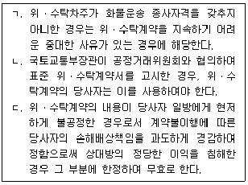
- ㄱ
- ㄴ
- ㄱ, ㄷ
- ㄴ, ㄷ
- ㄱ, ㄴ, ㄷ
(정답률: 알수없음)
58. 화물자동차 운수사업법상 화물자동차 운송사업의 상속 및 그 신고에 관한 설명으로 옳은 것은?
- 운송사업자가 사망한 경우 상속인이 그 운송사업을 계속하려면 피상속인이 사망한 후 6개월 이내에 국토교통부장관에게 신고하여야 한다.
- 국토교통부장관은 신고를 받은 날부터 14일 이내에 신고수리 여부를 신고인에게 통지하여야 한다.
- 국토교통부장관이 「화물자동차 운수사업법」에서 정한 기간 내에 신고수리 여부를 신고인에게 통지하지 아니하면 그 기간이 끝난 날에 신고를 수리한 것으로 본다.
- 상속인이 상속신고를 하면 피상속인이 사망한 날부터 신고한 날까지 피상속인에 대한 화물자동차 운송사업의 허가는 상속인에 대한 허가로 본다.
- 상속인이 피상속인의 화물자동차 운송사업을 다른 사람에게 양도하려면 국토교통부장관의 승인을 받아야 한다.
(정답률: 알수없음)
59. 화물자동차 운수사업법상 화물자동차 운송주선사업자에 관한 설명으로 옳은 것은?
- 운송주선사업자가 허가사항을 변경하려면 국토교통부장관에게 신고하여야 한다.
- 운송주선사업자는 주사무소 외의 장소에서 상주하여 영업하려면 국토교통부장관에게 신고하여야 한다.
- 운송주선사업자는 화주로부터 중개를 의뢰받은 화물에 대하여 다른 운송주선사업자에게 수수료를 받고 중개를 의뢰할 수 있다.
- 운송주선사업자가 운송사업자에게 화물운송을 위탁하는 경우에는 운송가맹사업자의 화물정보망을 이용할 수 없다.
- 부정한 방법으로 화물자동차 운송주선사업의 허가를 받고 화물자동차 운송주선사업을 경영한 자는 과태료 부과 대상이다.
(정답률: 알수없음)
60. 화물자동차 운수사업법령상 화물자동차 운송사업의 허가에 관한 설명으로 옳은 것은?
- 화물자동차 운송사업자가 감차 조치 명령을 받은 후 6개월이 지났다면 증차를 수반하는 허가사항을 변경할 수 있다.
- 화물자동차 운송사업자는 허가받은 날부터 3년마다 허가기준에 관한 사항을 신고하여야 한다.
- 국토교통부장관은 운송사업자가 사업정지처분을 받은 경우 주사무소를 이전하는 변경허가를 할 수 있다.
- 화물자동차 운송사업의 허가에는 기한을 붙일 수 없다.
- 화물자동차 운송사업자가 상호를 변경하려면 국토교통부장관에게 신고하여야 한다.
(정답률: 알수없음)
61. 화물자동차 운수사업법령상 적재물배상보험등에 관한 설명으로 옳은 것은?
- 보험등 의무가입자인 화물자동차 운송주선사업자는 각 화물자동차별로 적재물배상보험등에 가입하여야 한다.
- 이사화물운송만을 주선하는 화물자동차 운송주선사업자는 사고 건당 2천만원 이상의 금액을 지급할 책임을 지는 적재물배상보험등에 가입하여야 한다.
- 특수용도형 화물자동차 중 「자동차관리법」에 따른 피견인자동차를 소유하고 있는 운송사업자는 적재물배상보험등에 가입하여야 하는 자에 해당하지 않는다.
- 보험등 의무가입자 및 보험회사등은 화물자동차 운송사업의 허가가 취소된 경우 책임보험계약등을 해제하거나 해지할 수 없다.
- 적재물배상보험등에 가입하지 아니한 보험등 의무가입자는 형벌 부과 대상이다.
(정답률: 알수없음)
62. 화물자동차 운수사업법령상 운임 및 요금 등에 관한 설명으로 옳은 것은?
- 운송사업자는 운임과 요금을 정하여 미리 신고하여야 하며, 신고를 받은 국토교통부장관은 30일 이내에 신고수리 여부를 신고인에게 통지하여야 한다.
- 화물자동차 안전운임위원회 위원의 임기는 2년으로 하되, 연임할 수 있다.
- 화물자동차 안전운임위원회에는 기획재정부, 고용노동부의 3급 또는 4급 공무원으로 구성된 특별위원을 둘 수 있다.
- 화물운송계약 중 화물자동차 안전운임에 미치지 못하는 금액을 운임으로 정한 부분은 무효로 하며, 당사자는 운임을 다시 정하여야 한다.
- 화물자동차 안전운임위원회는 안전운송원가를 심의ㆍ의결함에 있어 운송사업자의 운송서비스 수준을 고려하여야 한다.
(정답률: 알수없음)
63. 화물자동차 운수사업법령상 화물자동차 휴게소에 관한 설명으로 옳은 것은?
- 국토교통부장관은 휴게소 종합계획을 10년 단위로 수립하여야 한다.
- 국토교통부장관은 휴게소 종합계획을 수립하는 경우 미리 시ㆍ도지사의 의견을 듣고 관계 중앙행정기관의 장과 협의하여야 한다.
- 「한국공항공사법」에 따른 한국공항공사는 화물자동차 휴게소 건설사업을 할 수 있는 공공기관에 해당하지 않는다.
- 휴게소 건설사업 시행자는 그 건설계획을 수립하면 이를 공고하고, 관계 서류의 사본을 10일 이상 일반인이 열람할 수 있도록 하여야 한다.
- 「항만법」에 따른 항만이 위치한 지역으로서 화물자동차의 일일 평균 왕복 교통량이 1만5천대인 지역은 화물자동차 휴게소의 건설 대상지역에 해당하지 않는다.
(정답률: 알수없음)
64. 화물자동차 운수사업법령상 자가용 화물자동차에 관한 설명으로 옳지 않은 것은?
- 자가용 화물자동차로서 대통령령으로 정하는 화물자동차로 사용하려는 자는 국토교통부령으로 정하는 기준에 따라 시ㆍ도지사의 허가를 받아야 한다.
- 천재지변으로 인하여 수송력 공급을 긴급히 증가시킬 필요가 있는 경우, 자가용 화물자동차의 소유자는 시ㆍ도지사의 허가를 받으면 자가용 화물자동차를 유상으로 화물운송용으로 임대할 수 있다.
- 자가용 화물자동차를 사용하여 화물자동차 운송사업을 경영한 경우 시ㆍ도지사는 6개월 이내의 기간을 정하여 그 자동차의 사용을 제한하거나 금지할 수 있다.
- 자가용 화물자동차의 소유자가 자가용 화물자동차를 사용하여 화물자동차 운송사업을 경영하였음을 이유로 시ㆍ도지사가 사용을 금지한 자가용 화물자동차의 소유자는 해당 화물자동차의 자동차등록증과 자동차등록번호판을 반납하여야 한다.
- 「화물자동차 운수사업법」을 위반하여 자가용 화물자동차를 유상으로 화물운송용으로 제공한 자는 형벌 부과 대상이다.
(정답률: 알수없음)
65. 화물자동차 운수사업법령상 화물자동차 운송사업의 폐업에 관한 설명으로 옳지 않은 것은?
- 운송사업자가 화물자동차 운송사업의 전부를 폐업하려면 미리 신고하여야 한다.
- 폐업 신고의 의무는 신고에 대한 수리 여부가 신고인에게 통지된 때에 이행된 것으로 본다.
- 운송사업자가 화물자동차 운송사업의 전부를 폐업하려면 미리 그 취지를 영업소나 그 밖에 일반 공중이 보기 쉬운 곳에 게시하여야 한다.
- 화물자동차 운송사업의 폐업 신고를 한 운송사업자는 해당 화물자동차의 자동차등록증과 자동차등록번호판을 반납하여야 한다.
- 화물자동차 운송사업의 폐업 신고를 받은 관할관청은 그 사실을 관할 협회에 통지하여야 한다.
(정답률: 알수없음)
66. 화물자동차 운수사업법상 화물자동차 운송사업의 허가를 받을 수 없는 자는?
- 「화물자동차 운수사업법」을 위반하여 징역 이상의 실형을 선고받고 그 집행이 면제된 날부터 3년이 지난 자
- 「화물자동차 운수사업법」을 위반하여 징역 이상의 형의 집행유예를 선고받고 그 유예기간이 종료된 후 1년이 지난 자
- 부정한 방법으로 화물자동차 운송사업의 허가를 받아 그 허가가 취소된 후 3년이 지난 자
- 「화물자동차 운수사업법」제11조에 따른 운송사업자의 준수사항을 위반하여 화물자동차 운송사업의 허가가 취소된 후 3년이 지난 자
- 파산선고를 받고 복권된 자
(정답률: 알수없음)
67. 유통산업발전법상 공동집배송센터에 관한 설명으로 옳은 것은?
- 시ㆍ도지사는 물류공동화를 촉진하기 위하여 필요한 경우에는 시장ㆍ군수ㆍ구청장의 추천을 받아 산업통상자원부령으로 정하는 요건에 해당하는 지역 및 시설물을 공동집배송센터로 지정할 수 있다.
- 공동집배송센터사업자는 지정받은 사항 중 산업통상자원부령으로 정하는 중요사항을 변경하려면 시ㆍ도지사의 변경지정을 받아야 한다.
- 공동집배송센터의 지정을 받은 날부터 정당한 사유 없이 2년 이내에 시공을 하지 아니하는 경우에는 공동집배송센터의 지정이 취소될 수 있다.
- 거짓으로 공동집배송센터의 지정을 받은 경우는 공동집배송센터의 지정을 취소할 수 있는 사유에 해당한다.
- 시ㆍ도지사는 집배송시설의 집단적 설치를 촉진하고 집배송시설의 효율적 배치를 위하여 공동집배송센터 개발촉진지구의 지정을 산업통상자원부장관에게 요청할 수 있다.
(정답률: 알수없음)
68. 유통산업발전법상 형벌 부과 대상에 해당하지 않는 것은?
- 유통표준전자문서를 위작하는 죄의 미수범
- 대규모점포를 개설하려는 자로서 부정한 방법으로 대규모점포의 개설등록을 한 자
- 대규모점포등관리자로서 부정한 방법으로 회계감사를 받은 자
- 유통정보화서비스를 제공하는 자로서「유통산업발전법 시행령」으로 정하는 유통표준전자문서 보관기간을 준수하지 아니한 자
- 대규모점포등관리자로서 신고를 하지 아니하고 대규모점포등개설자의 업무를 수행한 자
(정답률: 알수없음)
69. 유통산업발전법령상 대규모점포의 등록에 관한 설명으로 옳은 것을 모두 고른 것은?
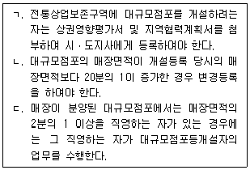
- ㄱ
- ㄷ
- ㄱ, ㄴ
- ㄴ, ㄷ
- ㄱ, ㄴ, ㄷ
(정답률: 알수없음)
70. 유통산업발전법상 유통산업의 경쟁력 강화에 관한 설명으로 옳은 것은?
- 산업통상자원부장관은 「중소기업기본법」제2조에 따른 중소기업자 중 대통령령으로 정하는 소매업자 30인이 공동으로 중소유통공동도매물류센터를 건립하는 경우 필요한 행정적ㆍ재정적 지원을 할 수 있다.
- 산업통상자원부장관은 중소유통공동도매물류센터를 건립하여 중소유통기업자단체에 그 운영을 위탁할 수 있다.
- 지방자치단체의 장은 상점가진흥조합이 주차장ㆍ휴게소 등 공공시설의 설치 사업을 하는 경우에는 예산의 범위에서 필요한 자금을 지원할 수 있다.
- 상점가진흥조합은 조합원의 자격이 있는 자의 과반수의 동의를 받아 결성한다.
- 상점가진흥조합의 조합원은 상점가에서 도매업ㆍ소매업ㆍ용역업이나 그 밖의 영업을 하는 모든 자로 한다.
(정답률: 알수없음)
71. 유통산업발전법상 대규모점포등관리자의 회계감사에 관한 설명이다. ( )에 들어갈 내용을 바르게 나열한 것은?
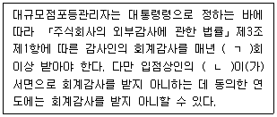
- ㄱ: 1, ㄴ: 과반수
- ㄱ: 1, ㄴ: 3분의 2 이상
- ㄱ: 2, ㄴ: 과반수
- ㄱ: 2, ㄴ: 3분의 2 이상
- ㄱ: 2, ㄴ: 5분의 3 이상
(정답률: 알수없음)
72. 항만운송사업법령상 항만운송 분쟁협의회에 관한 설명으로 옳은 것은?
- 항만운송 분쟁협의회는 사업의 종류별로 구성한다.
- 항만운송근로자 단체는 항만운송 분쟁협의회 구성에 참여할 수 있다.
- 항만운송 분쟁협의회의 회의는 분쟁협의회의 위원장이 필요하다고 인정하거나 재적위원 3분의 1 이상의 요청이 있는 경우에 소집한다.
- 항만운송 분쟁협의회의 회의는 재적위원 과반수의 출석으로 개의하고, 출석위원 과반수의 찬성으로 의결한다.
- 항만운송과 관련된 노사 간 분쟁의 해소에 관한 사항은 항만운송 분쟁협의회의심의ㆍ의결사항에 포함되지 않는다.
(정답률: 알수없음)
73. 항만운송사업법상 항만운송에 해당하지 않는 것은?
- 타인의 수요에 응하여 하는 행위로서 「해운법」에 따른 해상화물운송사업자가 하는 운송
- 타인의 수요에 응하여 하는 행위로서 항만에서 뗏목으로 편성하여 운송된 목재를 수면 목재저장소에 들여놓는 행위
- 타인의 수요에 응하여 하는 행위로서 항만에서 화물을 선박에 싣거나 선박으로부터 내리는 일
- 타인의 수요에 응하여 하는 행위로서 항만에서 선박 또는 부선을 이용하여 운송될 화물을 하역장에서 내가는 행위
- 타인의 수요에 응하여 하는 행위로서 항만이나 지정구간에서 목재를 뗏목으로 편성하여 운송하는 행위
(정답률: 알수없음)
74. 항만운송사업법령상 항만운송사업에 관한 설명으로 옳은 것은?
- 항만운송사업의 종류는 항만하역사업, 검수사업, 감정사업, 검량사업으로 구분된다.
- 항만운송사업의 등록신청인이 법인인 경우 그 법인의 정관은 등록신청시 제출하여야 하는 서류에 포함되지 않는다.
- 검수사등의 자격이 취소된 날부터 3년이 지난 사람은 검수사등의 자격을 취득할 수 없다.
- 항만운송사업을 하려는 자는 항만별로 관리청에 등록하여야 한다.
- 항만운송사업자가 사업정지명령을 위반하여 그 정지기간에 사업을 계속한 경우는 항만운송사업의 정지사유에 해당한다.
(정답률: 알수없음)
75. 철도사업법령상 철도사업자에 관한 설명으로 옳지 않은 것은?
- 철도사업을 경영하려는 자는 지정ㆍ고시된 사업용철도노선을 정하여 국토교통부장관의 면허를 받아야 한다.
- 천재지변으로 철도사업자가 국토교통부장관이 지정하는 날에 운송을 시작할 수 없는 경우에는 국토교통부장관의 승인을 받아 날짜를 연기할 수 있다.
- 철도사업의 면허를 받을 수 있는 자는 법인으로 한다.
- 철도사업자는 여객에 대한 운임을 변경하려는 경우 국토교통부장관의 허가를 받아야 한다.
- 철도사업자는 사업계획 중 여객열차의 운행구간을 변경하려는 경우 국토교통부장관의 인가를 받아야 한다.
(정답률: 알수없음)
76. 철도사업법상 철도사업의 관리에 관한 설명으로 옳지 않은 것은?
- 철도사업자는 그 철도사업을 양도ㆍ양수하려는 경우에는 국토교통부장관의 인가를 받아야 한다.
- 철도시설의 개량을 사유로 하는 경우 휴업기간은 6개월을 넘을 수 없다.
- 철도사업자가 선로 또는 교량의 파괴로 휴업하는 경우에는 국토교통부장관에게 신고하여야 한다.
- 국토교통부장관은 철도사업자가 거짓이나 그 밖의 부정한 방법으로 철도사업의 면허를 받은 경우에는 면허를 취소하여야 한다.
- 국토교통부장관은 과징금으로 징수한 금액의 운용계획을 수립하여 시행하여야 한다.
(정답률: 알수없음)
77. 철도사업법령상 전용철도에 관한 설명이다. ( )에 들어갈 내용을 바르게 나열한 것은?
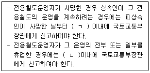
- ㄱ: 1개월, ㄴ: 1개월
- ㄱ: 1개월, ㄴ: 2개월
- ㄱ: 2개월, ㄴ: 3개월
- ㄱ: 3개월, ㄴ: 1개월
- ㄱ: 3개월, ㄴ: 3개월
(정답률: 알수없음)
78. 철도사업법령상 국유철도시설의 점용허가에 관한 설명으로 옳은 것은?
- 점용허가는 철도사업자와 철도사업자가 출자ㆍ보조 또는 출연한 사업을 경영하는 자에게만 한다.
- 철골조 건물의 축조를 목적으로 하는 경우에는 점용허가기간은 20년을 초과하여서는 아니된다.
- 점용허가를 받은 자가 「공공주택 특별법」에 따른 공공주택을 건설하기 위하여 점용허가를 받은 경우에 해당할 때에는 점용료 감면대상이 될 수 없다.
- 국토교통부장관은 점용허가를 받지 아니하고 철도시설을 점용한 자에 대하여 점용료의 100분의 150에 해당하는 금액을 변상금으로 징수할 수 있다.
- 점용허가로 인하여 발생한 권리와 의무를 이전하려는 경우에는 국토교통부장관에게 신고하여야 한다.
(정답률: 알수없음)
79. 농수산물 유통 및 가격 안정에 관한 법령상 농산물가격안정기금에 관한 설명으로 옳은 것은?
- 다른 기금으로부터의 출연금은 농산물가격안정기금의 재원으로 할 수 없다.
- 농산물의 수출 촉진사업을 위하여 농산물가격안정기금을 대출할 수 없다.
- 농산물가격안정기금의 여유자금은 「자본시장과 금융투자업에 관한 법률」제4조에 따른 증권의 매입의 방법으로 운용할 수 있다.
- 농림축산식품부장관은 농산물가격안정기금의 여유자금의 운용에 관한 업무를 농업정책보험금융원의 장에게 위탁한다.
- 농림축산식품부장관은 농산물가격안정기금의 수입과 지출을 명확히 하기 위하여 농협은행에 기금계정을 설치하여야 한다.
(정답률: 알수없음)
80. 농수산물 유통 및 가격 안정에 관한 법률상 농수산물도매시장에 관한 설명으로 옳은 것은?
- 도매시장은 중앙도매시장의 경우에는 시ㆍ도가 개설하고, 지방도매시장의 경우에는 시ㆍ군ㆍ구가 개설한다.
- 중앙도매시장의 개설자가 업무규정을 변경하는 때에는 농림축산식품부장관 또는 산업통상자원부장관의 승인을 받아야 한다.
- 도매시장법인은 도매시장 개설자가 부류별로 지정하되, 3년 이상 10년 이하의 범위에서 지정 유효기간을 설정할 수 있다.
- 상품성 향상을 위한 규격화는 도매시장 개설자의 의무사항에 포함된다.
- 도매시장법인이 다른 도매시장법인을 인수하거나 합병하는 경우에는 해당 도매시장 개설자에게 신고하여야 한다.
(정답률: 알수없음)